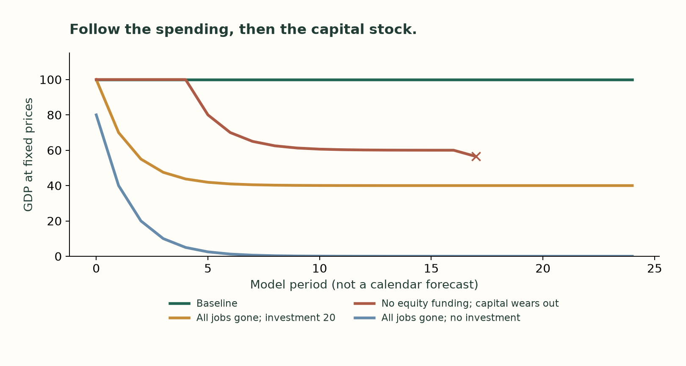
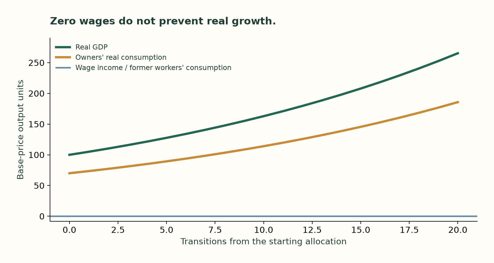

Who buys what
the machines make?
Ten businesses. Ten workers. Ten owners. Change the spending rules and follow the consequences, from fixed wages to an economy without paychecks.
Change one assumption.
Start with GDP of 100: workers earn and spend 60, owners receive 40 and spend 20, and firms buy 20 of new equipment. These are invented units, not estimates for a country.
Why does “everyone spends all income” have no GDP number?
With no investment and everyone spending all their income, the spending equation becomes an identity. It permits circulation at different output levels but does not choose one. Initial payments, wealth, prices and production rules must establish the scale. The model refuses to turn division by zero into either infinite GDP or automatic collapse.
Ten firms, one final-output total.
Each stage has two firms. Workers divide their time across firms, and each sector's purchases are split between the two suppliers. The model traces inputs; it does not simulate a pricing game or prove perfect competition.
169.4 of invoices − 69.4 of intermediate inputs = 100 of GDP. Buying an input is a cost to one firm and revenue to another. Adding all their sales overstates final production.
Open the ten firm accounts at baseline
| Firm | Sales | Inputs | Value added | Wages | Gross surplus | Worker equivalents |
|---|---|---|---|---|---|---|
| raw_materials_1 | 6.70 | 0.00 | 6.70 | 4.02 | 2.68 | 0.67 |
| raw_materials_2 | 6.70 | 0.00 | 6.70 | 4.02 | 2.68 | 0.67 |
| processing_1 | 13.00 | 5.20 | 7.80 | 4.68 | 3.12 | 0.78 |
| processing_2 | 13.00 | 5.20 | 7.80 | 4.68 | 3.12 | 0.78 |
| intermediates_services_1 | 15.00 | 4.50 | 10.50 | 6.30 | 4.20 | 1.05 |
| intermediates_services_2 | 15.00 | 4.50 | 10.50 | 6.30 | 4.20 | 1.05 |
| consumption_goods_1 | 40.00 | 20.00 | 20.00 | 12.00 | 8.00 | 2.00 |
| consumption_goods_2 | 40.00 | 20.00 | 20.00 | 12.00 | 8.00 | 2.00 |
| capital_goods_1 | 10.00 | 5.00 | 5.00 | 3.00 | 2.00 | 0.50 |
| capital_goods_2 | 10.00 | 5.00 | 5.00 | 3.00 | 2.00 | 0.50 |
Gross surplus is before depreciation. Fractional worker equivalents represent time allocated by ten workers across firms; they are not additional people.
The transition takes time.
A second model moves a fixed stock of 200 money units through named accounts. With all wages removed, inherited cash supports the first round. Demand then approaches 40 if investment stays at 20. If owners stop financing new equipment, firms first use reserves; later, depreciation erodes productive capacity.

One round of final purchases per model period. Production follows orders; no inventories, banks or borrowing. All scenarios and their exact starting conditions are in the downloadable results. The final no-recycling observation includes wage arrears and stops the run.
Zero wages. Growing consumption.
A third, deliberately optimistic model assumes machines can perform every required task. Owners consume 70% of output and invest 30%. Output per unit of capital is 0.5; depreciation is 10%. Real output and owner consumption grow 5% per period, while nominal expenditure stays at 100 and prices fall.

A mathematical possibility, not a growth forecast. Requires scalable nonlabor inputs, no diminishing returns, willing owner demand and fully flexible prices. Former workers have no consumption unless ownership or income is redistributed. This price-flexible growth allocation is separate from the fixed-price cash simulations.
What the experiment establishes
Fixed nominal wages do not impose a universal ceiling on real GDP. Output can grow through lower prices, owner spending and investment. Layoffs can still reduce demand under other spending rules. And GDP can rise while displaced people receive none of the gains.
The experiment does not verify a trillion-dollar AI forecast, estimate a recession probability, or determine the quality of the output. It makes the assumptions inspectable.